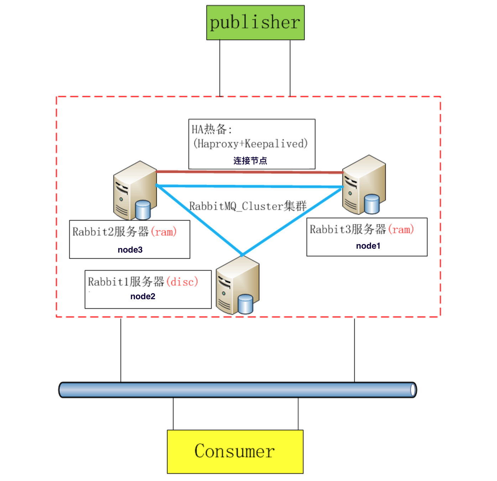
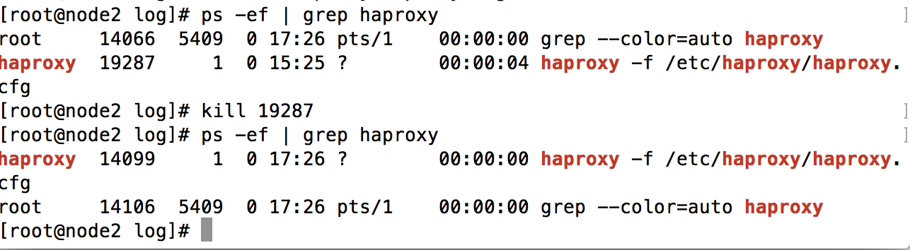

mq的使用状态分为
单一模式（非集群，单一服务）
没啥好说的.
默认的集群方式
连接一个节点(node1)，只能将消息任务从node1向其他节点(node2,node3)同步，如果连接这个节点
挂掉之后不能保证消息的传递，挂掉之后不能进行重新的连接。整体的服务就是挂掉了。负载 + rabbitmq集群模式
这种方式的好处是，使用负载（可以想象成SLB对服务器的负载），连接多个mq节点，当有mq节点挂掉之后，
其他节点还是可以继续工作，同时使用负载进行对多个mq节点的连接请求进行优化。将压力分摊到各个节点。
今天做的是搭建负载 + rabbitmq集群模式，先来看张图：

这里一共分为三个mq节点和一个负载节点（即搭建负载的连接节点），其中有两个是ram（内存），和一个disc(硬盘)
节点，这样可以保证队列的效率，同时也可以保证数据的安全性（持久化数据到硬盘）。
准备工作
以下所有操作均是root用户,且需要在三台节点机器上都进行操作
- 修改主机的hostname1$ vi /etc/hostname
如果是node1，则修改为node1，余下两台以此类推。
- 修改hosts1$ vi /etc/hosts
分别将三个节点的信息添加进去,格式如下:
192.168.199.1 node1
192.168.199.2 node2
193.168.199.2 node3
- 重启机器1reboot
修改hostname和hosts是为了能将hostname格式统一，方便管理和观察。
在三个机器安装rabbimq
首先安装erlang
1$ sudo yum install erlang下载最新版本rabbitmq
12$ wget "http://www.rabbitmq.com/releases/rabbitmq-server/v3.6.2/rabbitmq-server-3.6.2-1.noarch.rpm"$ rpm -ivh rabbitmq-server-3.6.2-1.noarch.rpm
.rpm是linux系统的可执行文件，像win下的.exe一样，rpm -ivh 是安装 .rpm的命令
安装时可能会需要socat
1socat是一个netcat的升级版，是在两个流之间建立双向通道安装socat
1$ sudo yum install socat以服务的方式启动mq
1$ service rabbitmq-server start安装mq客户端插件
1$ rabbitmq-plugins enable rabbitmq_management重启mq
1$ service rabbitmq-server restart解决无法登录问题
1$ sudo vi /etc/rabbitmq/rabbitmq.config
添加如下内容
[{rabbit, [{loopback_users, []}]}].
注意后面的’.’
统一每个机器的erlang.cookie
rabbitmq 是基于erlang进行工作的，erlang 天生就是用于集群的语言，其健壮性，高并发，分布式的优点为
rabbitmq提供了很好的环境。erlang集群是基于erlang.cookie的同步性进行通信，所以在配置集群之前应该
将erlang.cookie统一。
- 复制erlang.cookie到各个节点1234$ cat /var/lib/rabbitmq/.erlang.cookieTJXAHQIUTYPRHIFYSNNF$ cat ~/.erlang.cookieXKKEZRFMWHBKAQVQHSPV
分别将.erlang.cookie的内容复制到另外两个机器。
- 修改.erlang.cookie权限123$ chmod 400 /var/lib/rabbitmq/.erlang.cookie$ chown rabbitmq /var/lib/rabbitmq/.erlang.cookie$ chgrp rabbitmq /var/lib/rabbitmq/.erlang.cookie
准备工作基本就到此结束，下面开始正式的部署集群
集群
集群的方式还是需要使用rabbitmq自带的集群方式
- 三个节点同时启动rabbitmq1$ service rabbitmq-server start
默认加入集群node1
- 组成集群1234567node2 $ rabbitmqctl stop_appnode2 $ rabbitmqctl join_cluster rabbit@node1node2 $ rabbitmqctl start_appnode3 $ rabbitmqctl stop_appnode3 $ rabbitmqctl join_cluster rabbit@node1node3 $ rabbitmqctl start_app
此时 node2 与 node3 也会自动建立连接；如果要使用内存节点，则可以使用以下命令加入集群。
- 设置同步节点1$ rabbitmqctl set_policy ha-all "^" '{"ha-mode":"all"}'
将所有队列设置为镜像队列，即队列会被复制到各个节点，各个节点状态保持一致。
安装haproxy
haproxy是一个负载均衡的软件，基于TCP和HTTP应用的代理，支持虚拟主机, HAProxy实现了一种事件驱动,
单一进程模型，此模型支持非常大的并发连接数。类似于nginx，但是haproxy不能进行静态界面的托管，
但是在其它方面，比如负载轮询的算法种类要比nginx的优化好很多。我们使用haproxy做mq的基于TCP的
代理，在其提供的管理端界面中能清楚的看到各个节点的状态。
首先安装epel
1$ rpm -ivh http://download.fedoraproject.org/pub/epel/6/i386/epel-release-6-8.noarch.rpm安装haproxy
1$ yum -y install haproxy修改haproxy配置文件
|
|
将如下内容添加到配置文件中
启动haproxy
1$ haproxy -f /etc/haproxy/haproxy.cfg查看是否启动成功
1$ ps -ef | grep haproxy登录管理界面
1http://yourip:8888/haproxy_stats安装keepalived
1$ yum –y install keepalived配置Keepalived
1$ vi /etc/keepalived/keepalived.conf
将如下内容添加到配置文件中
- 创建脚本文件12$ mkdir -p /etc/keepalived/scripts/$ vi /etc/keepalived/scripts/haproxy_check.sh
将如下内容添加到文件中
创建日志文件
12$ touch /var/log/keepalived-ha-state.log$ chmod 777 /var/log/keepalived-ha-state.log启动keepalived
1$ service keepalived restart
此时启动keepalive的同时，haproxy也会启动，haproxy会对rabbitmq的三个节点进行负载。
测试
- 关停其中一个节点
当关停一个节点之后，其它的两个节点还是能继续工作。 - 干掉haproxy负载进程
如图，当我干掉haproxy进程的时候，通过keepalived马上又新建了一个haproxy的进程.

总结
到此 rabbitmq + haproxy + keepalived 热备集群就搭建完成了，搭建完成之后，妈妈再也不用担心我的
mq速度慢，安全性低，总挂的问题了。